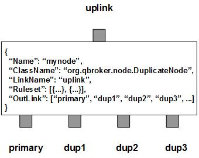

DuplicateNode duplicates incoming JMS messages to various selected destinations. It has two types of outlinks, primary as of the first outlink and non-primary as of rest of outlinks. All the incoming messages always go out through the primary outlink. Their duplicates will be routed to their selected non-primay outlinks.
DuplicateNode may also contain a number of predefined rulesets. These rulesets categorize messages into non-overlapping groups. Therefore, each rule defines a unique message group. If a ruleset has the preferredOutLink defined and it is same as the primary (the first) outlink, DuplicateNode will route the messages of the group to the primay outlink without any duplicate actions as a bypass. Any other bypass will be forced to the primary outlink since the messages going out of non-primary outlinks are not collectible.
A ruleset may define a list of the outlinks as the selected non-primary outlinks for the duplicated messages. If any selected outlink is either the primary or not existing, DuplicateNode will ignore it with a warning. If the selected outlinks are not defined or empty, DuplicateNode will assign the default list that contains all non-primary outlinks. But if PreferredOutLink is defined in the ruleset, the ruleset will be treated as a bypass ruleset. For those messages falling off all defined rulesets, DuplicateNode always creates an extra ruleset, nohit, to handle them. Nohit ruleset is always a bypass rule to the primay outlink.
There is a transaction control on the primary (first) outlink. The XAMode can be defined on the node level or on the rule level. The XAMode on the rule level will overwrite the one on the node level. If the XAMode of the node is on, all non-primary outlinks will wait for the transaction completed on the primary outlink before their propagation unless it is set off on certain rules. Therefore, it is possible to loss messages on the non-primary outlinks, since non-primary outlinks have no transaction support. However, if the XAMode of the node is off, all the non-primary outlinks will propagate with no wait. Therefore, there is a chance that the messages either double fed or lost on non-primary outlinks. All non-primary outlinks support OverFlowOption that takes three options: KeepNew, KeepOld and HoldOn. OverFlowOption determines what to do if the outlink gets stuck or overflown. KeepNew will have the old messages removed for the new messages. KeepOld is just to drop the new messages. HoldOn will block the operations.
DuplicateNode always adds an extra ruleset for the nohit messages. This nohit ruleset is always the first ruleset with the id of 0. On the node level, DisplayMask and StringProperty control the display result of outgoing messages.
The duplicate operation is executed via the pre-defined rulesets. Therefore, the configuration of the rulesets is critical to the operations of DuplicateNode. Here are complete properties of rulesets for DuplicateNode.
| Property Name | Data Type | Requirement | Description | Examples |
|---|---|---|---|---|
| Name | alphanumeric with no spaces | mandatory | name of the ruleset | event |
| XAMode | integer | optional | transaction mode | 1 (default value determined by the node) |
| SelectedOutLink | list | optional | list of name for selected outlinks | see example |
| PreferredOutLink | alphanumeric with no spaces | mandatory for bypass only | name of the preferred outlink | DAM_IN |
| FormatterArgument | list | optional | list of post format operations | see example |
| JMSPropertyGroup | list | optional | list of pattern groups on properties to select messages | see example |
| XJMSPropertyGroup | list | optional | list of pattern groups on properties to exclude messages | see example |
| PatternGroup | list | optional | list of pattern groups on body to select messages | see example |
| XPatternGroup | list | optional | list of pattern groups on body to exclude messages | see example |
| StringProperty | map | optional | for setting the user properties on the messages | see examples |
{
...
"Ruleset": [{
"Name": "bypass",
"PreferredOutLink": "primary",
"JMSPropertyGroup": [{
"JMSType": "^no_dup$"
}]
}],
...
}
where it routes the messages to the primary outlink without duplication.
Here is an example of the generic duplication ruleset.
{
...
"Ruleset": [{
"Name": "dup",
"XAMode": "0",
"JMSPropertyGroup": [{
"JMSMessageID": "."
}]
}],
...
}
where it duplicates the messages to all the non-primary outlinks.
Here is an example of the duplication ruleset with SelectedOutLink.
{
...
"Ruleset": [{
"Name": "proxy",
"XAMode": "0",
"JMSPropertyGroup": [{
"notificationType": "^(1|10)$"
}],
"SelectedOutLink": ["PROXGEN_MSF_IN"]
}],
...
}
where it duplicates the messages to the selected outlinks only.
Here is an example of DuplicateNode:
{
"Name": "node_duplicate",
"ClassName": "org.qbroker.node.DuplicateNode",
"Description": "duplicate messages",
"Operation": "duplicate",
"LinkName": "root",
"Capacity": "6",
"WaitTime": "20",
"XAMode": "0",
"DisplayMask": "0",
"Ruleset": [{
"Name": "all",
"XAMode": "0",
"JMSPropertyGroup": [{
"JMSType": "."
}]
}],
"OutLink": ["primary", {
"Name": "archive",
"Capacity": "64",
"OverflowOption": "KeepOld"
}
}